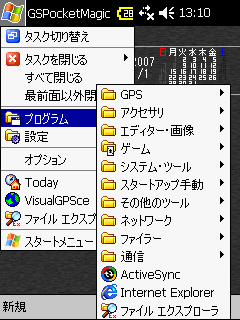
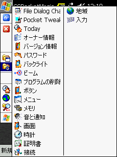
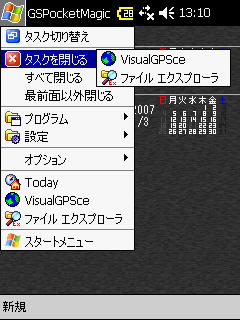
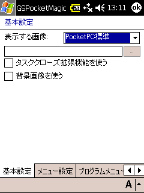
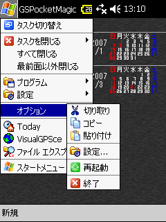
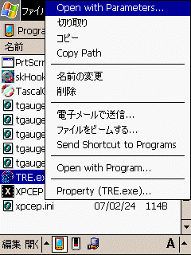
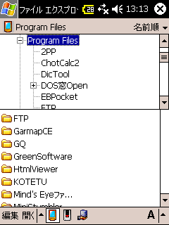
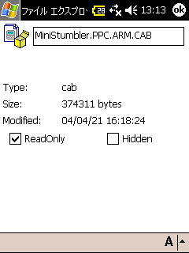

WindowsMobileでGPS地図を使う : デスクトップの設定
Home > Software > ソフトウエア開発・サーバ管理のメモ帳 > このページ
Last Update
| デバイスの基本設定 デスクトップの設定 ネットワークの設定 GPSの設定 SiRF GPSモジュールの設定 地図の作成 |
基本設定した後のデスクトップ状況
標準状態では、夜間に画面を見るときに眩しすぎる。使いもしないPIM機能のために画面がごちゃごちゃしているのもすっきりさせたい。

GSPocketMagic++のメニュー
プログラム・メニューの展開

GSPocketMagic++のメニュー
設定メニューを展開

GSPocketMagic++のメニュー
タスクを閉じるメニュー

GSPocketMagic++の設定で「タスククローズ拡張
機能」をONにすると、右上に閉じるボタンが出る
スタート・メニューや設定メニューをカスタマイズしたときは、GSPocketMagic++のメニューで「オプション
－ 設定」を表示させて「OK」ボタンを押さないと現在の状態が反映されない場合がある。
設定メニューに「電源」が表示されていないのは、何らかの不具合か？
押してはならないボタン
Windows Mobile/Pocket PCの機種によっては、ソフトリセットの実装に不具合があり、再起動に失敗してファクトリーリセットせざるを得なくなる場合がある。
私の保有しているMitac社のMio168には、この不具合がある。

GSPocketMagic++のメニュー
「再起動ボタン」は押さない！
ファイル・エクスプローラ拡張
File Explorer extensionで機能拡張した後は、「ショートカットの作成」などが出来るようになる。

コンテキスト・メニューには
ショートカット作成が表示されるようになる

フォルダ名をクリックすると
フォルダ・ツリーが表示されるようになる

プロパティ設定では「読み取り専用属性」が
付けられるようになる
しかし、ショートカット作成やフォルダ・ツリーという当たり前の機能すら付いていない「マイクロソフト製品」の中途半端ときたら...